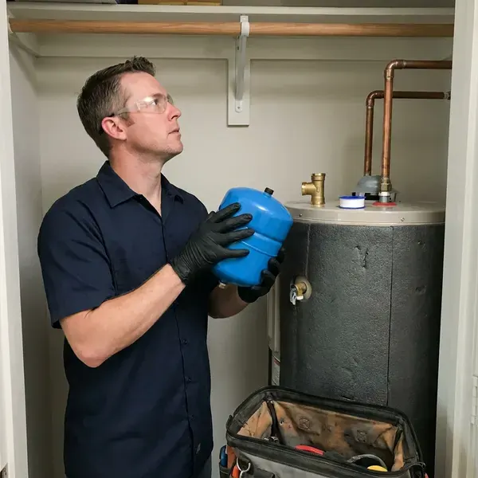

Water Heater Expansion Tank Installation in Bothell, WA
Expansion tanks for Bothell, WA homes, sized to your heater and charged to your pressure.
- Written Prices Up Front
- Code-Compliant Mounting
- Licensed Local Plumbers
- Pressure Tested

Need a Water Heater Expansion Tank Installed in Bothell, WA?
Licensed plumbers install it in about an hour.
Licensed Expansion Tank Installers in Bothell, WA
FHN Plumbing puts expansion tanks on closed systems, where pressure has no way back to the main. That closed loop usually comes from a PRV, check valve or backflow device, and once it exists, the water heater needs a place for expanded water or it will push the relief valve open. The relief valve starts to drip.
Some of what we do:
- Expansion tank sizing and installation
- Compliance with local code
- Air precharge set to your house pressure

Additional Plumbing Installation Services in Bothell, WA
We install water heaters, pumps, lines, and fixtures across Bothell, WA with careful, permitted work that passes inspection the first time.


Customers
Why Choose FHN Plumbing for Water Heater Expansion Tank Installation in Bothell, WA?
Thermal expansion on a closed system can push house pressure past 150 psi. At that point the T and P valve lets go, and before it gets there, the high pressure is already working on supply lines, toilet fill valves and faucet cartridges throughout the house. That is where drips begin.
- Full System Check, We check the PRV and relief valve while we are there.
- Prevent Leaks, Lower peak pressure cuts the risk of leaks and bursts.
- Properly Supported, Tanks are strapped or bracketed so their weight stays off the piping.
Citywide Coverage
Older districts and new developments across Bothell both get prompt service. Same-day installs are usually possible, and they protect the plumbing in a 1950s house the same way they protect a new build with PEX and a tankless heater. Same care either way.
Experienced Team
Tight closets and attic platforms do not slow our plumbers down. They can fit a tank in tight spots without stressing the pipe, using a short nipple and a bracket when the wall is close, or a horizontal mount where the manufacturer allows it. Each brand lists its approved positions.
Safety-First Approach
Pressure testing and secure mounting are part of every install. Full of water, a 2 gallon tank weighs about 17 pounds, so we strap or bracket it to the structure instead of letting it hang on a 3/4 inch nipple that will eventually crack. The strap is cheap.
Trusted Certified Bothell Plumbing Services Professionals
At FHN Plumbing, we are proud to offer certified plumbing services throughout Bothell, WA. Those papers on the wall mean something. Our plumbers hold recognized industry credentials, and they follow strict safety and quality rules on every repair, installation and maintenance call we run.
Call Us Now PHCC Plumbing Contractor Recognition
PHCC Plumbing Contractor Recognition Better Business Bureau (BBB) Accreditation
Better Business Bureau (BBB) Accreditation Angi Certified Pro
Angi Certified Pro ISO 9001 Quality Management Certification
ISO 9001 Quality Management CertificationWater Heater Expansion Tank Installation Services in Bothell, WA
Expansion Tank Installation Cost Comparison in Bothell, WA
Adding the tank during a water heater replacement is the cheapest time to do it. With the water off and the pipes open, it is a small add, while a standalone install costs a bit more in labor, and attic work, a larger tank or a new PRV push the total higher in Bothell. You get the price before we start.

Residential Expansion Tank Installation in Bothell
Closed systems are the reason most homes in Bothell need an expansion tank. Once a PRV or meter check valve is in place, heated water cannot push back into the main, so every heating cycle raises the pressure in your pipes until something gives. Usually the relief valve gives first.
New Expansion Tank Installation in Bothell
Homes with a PRV and no expansion tank see a pressure spike every heating cycle. A new tank goes on a tee in the cold supply, precharge it to your static pressure, usually somewhere between 50 and 70 psi, and then run the heater while we watch a gauge on a hose bibb in Bothell. The needle should barely move.
Pressure Reducing Valve and Expansion Tank Pairing in Bothell
Pressure reducing valves are common, and they protect fixtures from high street pressure. They also turn your plumbing into a closed system, so we test the PRV output, replace it if it is creeping, and pair it with a correctly charged expansion tank so pressure stays steady throughout the house in Bothell. Old PRVs often creep up.
Preventing Water Heater Damage in Bothell
Pressure swings wear out water heaters early. Every cycle without an expansion tank spikes the pressure in the tank and the pipes, stressing the welds, the fittings and the relief valve, and a lot of heaters we replace in Bothell died from that stress years before their time. The fix is a small tank.
Expansion Tank for Tankless Water Heaters in Bothell, WA
Recirculation pumps keep hot water in the lines, which means more heated water and more expansion. A small expansion tank often makes sense on a tankless with a recirc loop, especially in Bothell, WA homes with a PRV or a meter check valve that already closed the system. No tank goes in without a reason.
Commercial and Multi-Unit Expansion Tanks in Bothell
Apartment buildings and offices with several heaters need tanks sized for the whole hot water system. We include storage tanks and recirculation loops in the math, floor-mount the larger tanks with proper supports, and plan the work to keep hot water interruptions short for tenants in Bothell, WA. Weekend work is available.

Expansion Tanks With Tankless Water Heaters in Bothell, WA
Tankless systems hold very little water, so most do not need an expansion tank. A recirc loop or buffer tank can change the answer, and we check for them before recommending anything, because nobody in Bothell, WA should pay for a part that does not do a job. We will tell you if it is unnecessary.
Water Heater Expansion Tank Installation Near Me in Bothell, WA
Searching for expansion tank installation near me in Bothell, WA? We carry common tank sizes on every truck, so in most cases we can test your pressure, size the tank and install it on the first visit instead of ordering parts and coming back later in the week. Most installs happen the same day.
Expansion tank work near you in Bothell, WA comes from a local crew. Response times stay short across the area, and since most installs take an hour or two, we can often fit yours in the same day you call, especially if the relief valve is already dripping. We move drips up the list.
FHN Plumbing at a Glance
- Licensed and insured plumbers serving Bothell, WA
- Same-day appointments and 24/7 emergency response
- Clear written estimates, no hidden fees
- 4.9-star rated by 382+ Washington customers
Bothell Map
Bothell Information
- Population
- 50,213
- Area codes
- 425/206/360
- Service area
- Bothell and towns within a 40 mile drive
- Nearby
- Kirkland, Shoreline, Redmond, Bellevue
Municipal water west of the mountains in Washington is typically soft, while supplies on the drier east side tend to run harder. In Bothell, WA, a water heater expansion tank absorbs the pressure that heated water creates, protecting the heater and the pipes.
Expert Services
Reach out to FHN Plumbing for reliable plumbing work done by licensed pros in Bothell, WA.
Our Specialized Plumbing Services in Bothell, WA
At FHN Plumbing, we handle the full list of plumbing services across Bothell, WA. From leak detection to full system installs, our team works fast and charges fair prices on homes and commercial properties alike. Take a look at our core services below:


How Our Water Heater Expansion Tank Installation Works in Bothell, WA
Here is how an expansion tank install goes.
Request a Quote
Call FHN Plumbing at (425) 491-3131 and describe what you are seeing. We set a time to come out.
On-Site Assessment
A licensed plumber checks your heater and tests static pressure to pick the tank size.
Professional Installation
We precharge the tank, install it on the cold supply and strap it securely.
Frequently Asked Questions About Water Heater Expansion Tank Installation in Bothell
Residential expansion tank installs usually cost $250 to $550 with the tank and labor. Attic installs, larger tanks or a new PRV can bring it to $600 to $1,000.
A dripping T and P valve on the water heater is the most common symptom. Pressure that swings up and down is another, and a waterlogged tank sounds dull all the way up when you tap it and feels heavy, which means the diaphragm has failed. Then it needs replacing.
Water spitting from the air valve is the clearest sign. Other clues are rust on the tank, banging pipes or pressure that swings, since all of those show up when the tank stops absorbing expansion and pressure starts climbing again. A tap test helps confirm it.
Water expands when it heats, and on a closed system that extra volume raises the pressure in every pipe. Without a tank, the pressure spikes every heating cycle, which wears out the heater, the fixtures and the relief valve in Bothell. Plumbers in Washington must hold a state certification, and water heater replacements and repiping usually require a permit. Plenty of local codes require one.
Watts, Amtrol and Zurn are the brands we install most. Each one makes potable tanks that hold a charge well, and our plumbers pick the model by your heater size and pressure, then explain why before installing anything. Potable rating is a must.
Sometimes. Thermal expansion is usually minor on tankless because it holds so little water, but a closed system with a backflow preventer, a PRV or a recirculation loop can still call for one, and we check before recommending it. Local code may require it regardless.
About one to two hours for a typical install. The time includes testing, installing and watching a heating cycle, and we keep the water off for as little of that as possible, usually under an hour. Attics can take longer.
Heavy and dull when tapped near the top means waterlogged. Water coming out of the air valve when pressed confirms it.
What People Are Saying About Our Plumbing Experts?

Karen W.
After our third pinhole leak in copper, we stopped patching. FHN Plumbing gave us a written plan room by room and repiped the house in PEX while we stayed in it. The crew covered our floors every morning and cleaned up every night.
Repiping · Kirkland, WA
James P.
Our restaurant had a slow leak at the hand sink that was rotting the cabinet base. FHN Plumbing came in at six in the morning before prep, replaced the trap and both supply lines, and was packed up before my first cook clocked in.
Commercial Plumbing · Seattle, WAPatricia H.
We had a slab leak that two other companies could not find. FHN Plumbing located it in under an hour with a listening device. They rerouted the line through the attic instead of breaking up the floor, so we kept our kitchen tile.
Slab Leak Repair · Bothell, WA
Nathan E.
Our tankless heater kept throwing an error code and shutting off mid shower. The tech flushed the heat exchanger, which was full of scale, and replaced a bad flow sensor. Hot water has been steady for half a year now.
Water Heater Repair · Bellevue, WATyler J.
We bought a taller comfort height toilet for my dad, who just had knee surgery. The plumber pulled the old one, found the flange was cracked, and replaced it before setting the new bowl. Took about two hours.
Toilet Installation · Seattle, WA
Brian W.
I smelled gas behind the dryer and called right away. The plumber found a corroded flex connector, replaced it, and pressure tested the whole line before turning the gas back on. He let me watch the gauge hold steady for fifteen minutes.
Gas Line Repair · Everett, WA